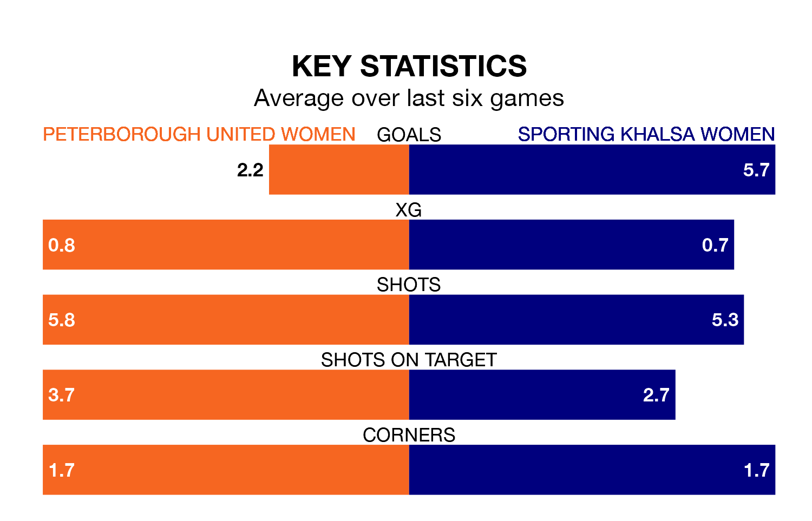

Two of Women's National League Division One Midlands's top sides face each other in Sunday's early kick-off, when third-placed Peterborough United Women host fourth-placed Sporting Khalsa Women.
Peterborough United have picked up eight wins from 11 games so far this season, and sit two points above the visitors going into the 2pm match.
Sporting, meanwhile, have won seven and drawn one of 10, picking up 22 points.
With 43 goals in 10 games so far this season, Sporting are the league's highest scorers with 4.3 goals per game. And they are conceding fewer than average, letting in 12 goals at a rate of 1.2 per game.
Peterborough United are also above average scorers, with 2.6 goals per game, compared to a league average of 1.8. They have conceded 1.4 goals per game.
The hosts are in reasonable form in Women's National League Division One Midlands, with four wins and two losses from their last six games.
With five wins and a draw over that period, the away team's form is better – they have taken 16 points from 18, compared to Peterborough United's 12.
In the last five years, Peterborough United and Sporting have played each other on five occasions. Peterborough United won three of them and Sporting two.
On average, Peterborough United scored 1.8 goals and Sporting 1.8 in those matches.
Their last meeting was on February 12, when Peterborough United won 2-0 at home.
Peterborough United's last match was on January 14, a 2-0 win against Sutton Coldfield Town Women.
Sporting beat Solihull Moors Women 5-0 last time out, also on January 14.
Updated: 09:18 (UTC), 23/01/24